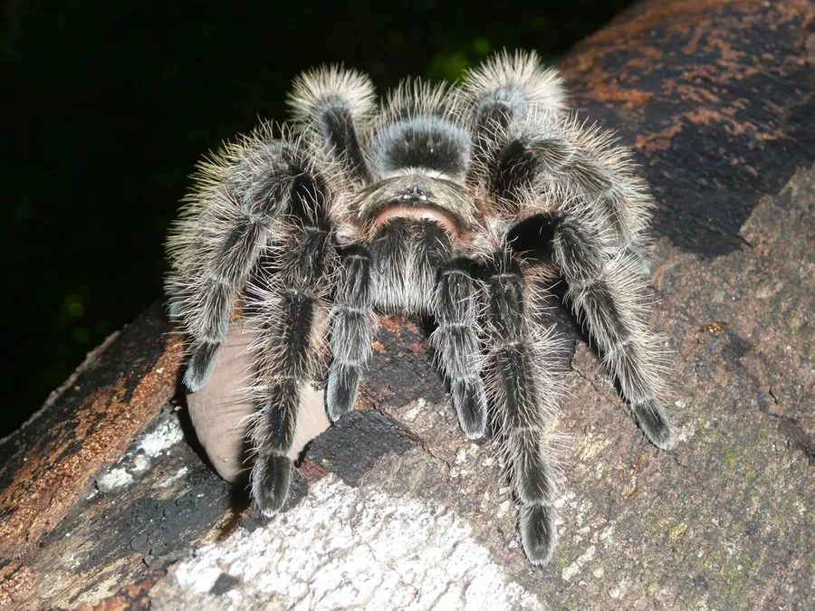

蛛形动物 · 动物界
洪都拉斯卷毛捕鸟蛛 Tliltocatl albopilosus

原产中美洲的捕鸟蛛，全身覆盖卷曲的长毛，性情温顺，是新手常养的宠物捕鸟蛛，野生种群受贸易影响。
- 分类
- 门节肢动物门纲蛛形纲目蜘蛛目科捕鸟蛛科属卷毛捕鸟蛛属
- 栖息环境
- 热带干燥林和灌丛，常在地面挖洞或利用石块缝隙
- 地理分布
- 中美洲的洪都拉斯、尼加拉瓜和哥斯达黎加
- 保护级别
- IUCN 暂无评估；非中国原产，在中国无保护级别
物种志
洪都拉斯卷毛捕鸟蛛成年足展 13–15 cm，体色深褐至黑色，全身覆盖浓密而卷曲的浅色长毛，头部和腹部尤其明显，看起来毛茸茸的；雌蛛体型粗壮，雄蛛较瘦小，足上也有长毛。
它原产于洪都拉斯、尼加拉瓜和哥斯达黎加，栖息于热带干燥林和灌丛，常在地面挖洞或利用石块缝隙筑巢，夜间捕食昆虫和小型无脊椎动物。它性情温顺、行动缓慢，受惊时主要弹射蛰毛，蛰毛接触皮肤和眼睛会引起瘙痒红肿，饲养时需避免蛰毛飘入眼睛。雌蛛寿命可达 20 年，雄蛛成熟后仅能再活几年。卷毛捕鸟蛛是异宠市场的常见种类，因外形可爱而受欢迎，野外捕捉和栖息地破坏对种群造成压力；它喜欢略干燥的环境，目前 IUCN 暂无评估。
形态与习性
- 食性昆虫和小型无脊椎动物
- 足展13–15 cm
- 识别全身覆盖卷曲的浅色长毛
- 寿命雌蛛可达 20 年
- 习性地栖，性情温顺，行动缓慢
- 防御弹射蛰毛，接触皮肤和眼睛会瘙痒红肿
趣味知识
- 洪都拉斯卷毛捕鸟蛛全身的毛又长又卷，像一只毛茸茸的玩具。
- 它性情温顺、行动缓慢，是很多新手养的第一只捕鸟蛛。
- 它受惊时会用后足弹射蛰毛，这些毛会让人皮肤发痒。